La decisión de prolongar o frenar al PRI está en más de 58 millones de mexicanos que han sido inscritos en el padrón electoral para que puedan votar en los comicios del 2 de julio próximo.
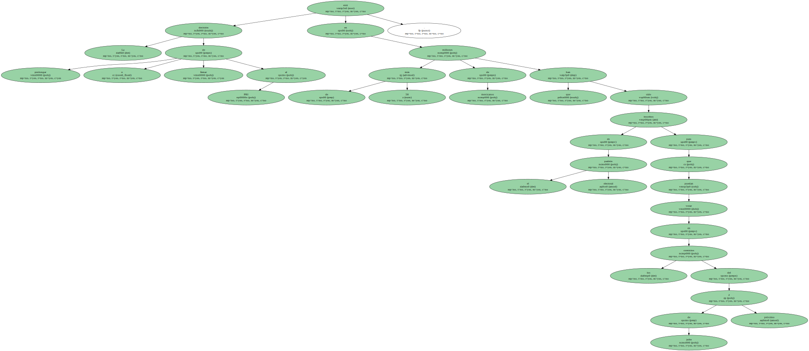De los seis candidatos que buscan la presidencia de México , solamente el oficialista Francisco Labastida , y el conservador Vicente Fox , de la Alianza por el Cambio , tienen mayores posibilidades de ganar las elecciones , según la mayoría de los sondeos de opinión difundidos en los últimos dos meses.
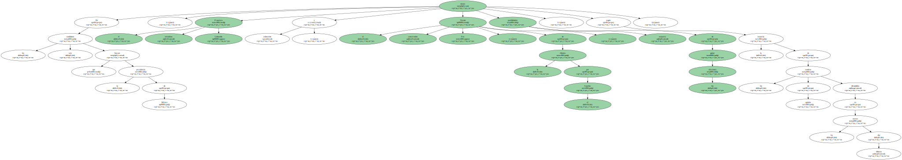Cuauhtémoc Cárdenas , líder del Partido de la Revolución Democrática ( PRD ) , quien por tercera vez busca la presidencia , aparece de tercero en las intenciones de votos , mientras que los restantes tres candidatos apenas superan juntos el dos por ciento.
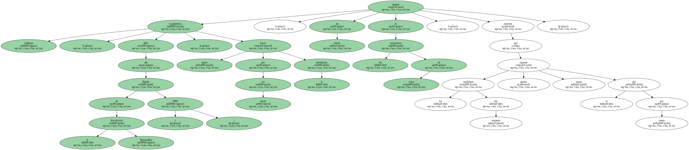La campaña se ha desarrollado sin incidentes lamentables , aunque el coordinador general del Programa de las Naciones Unidas para la Observación Electoral , el vietnamita Nguyen Huu Dong , dijo el pasado lunes que la compra y los obstáculos al libre voto , son los temas que más preocupan a los observadores extranjeros.
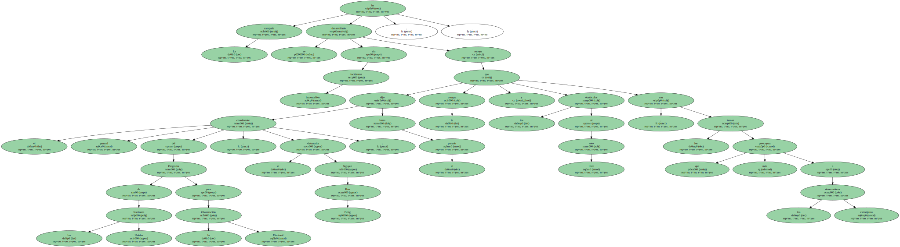Los observadores temen que las presiones políticas y la compra o coacción del voto , puedan incidir a favor del PRI , principalmente en las zonas rurales , aunque admiten que " es difícil comprobarlo ".
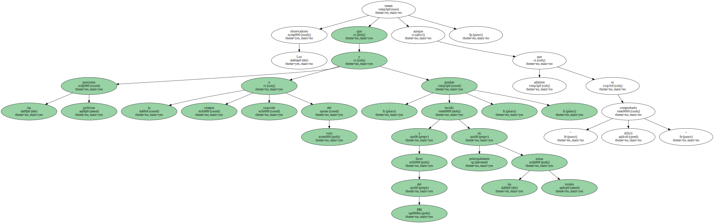Para las elecciones , se espera la llegada de más de 450 observadores extranjeros procedentes de unos 21 países , lo mismo que de diversos organismos internacionales.
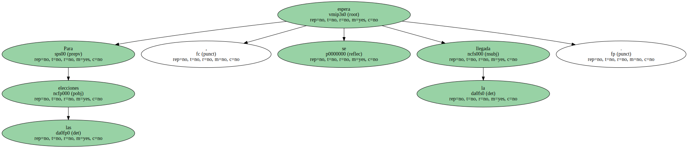Los últimos dos meses de la campaña política han estado marcados por insultos personales , principalmente entre Labastida y Fox , quienes se han dicho desde " mariquita " , " feo " , " tonto " , " corrupto " , " papas fritas " , " producto chatarra " y " enano " , entre otros calificativos.
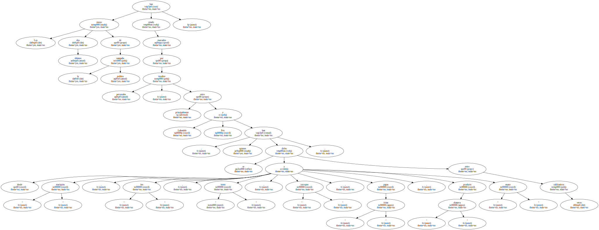La " guerra " de palabras ha entretenido a muchos mexicanos , mientras que otros exigen que en vez de insultarse , profundicen en sus programas de gobierno en caso de ganar la presidencia.
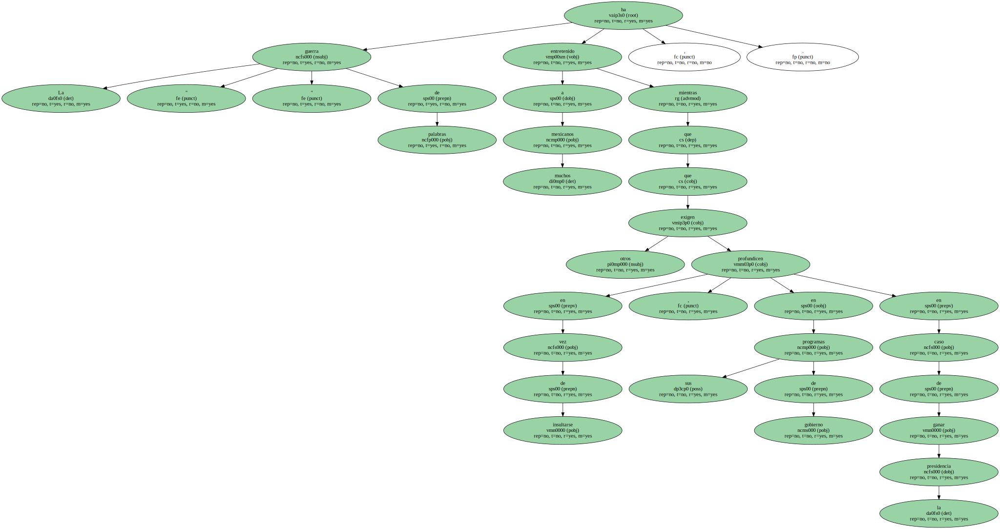Según analistas locales , nunca antes el PRI había sentido el fantasma de la oposición rondando la residencia de Los Pinos , aunque hay quienes aseguran que Fox sólo podrá vencer a Labastida , si logra una alianza sólida con el PRD.
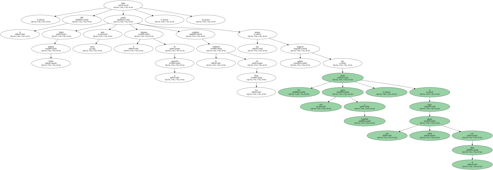Pero Cárdenas , candidato del PRD , ha reiterado esta semana que no hará ninguna alianza con Fox , con quien ha intercambiado frases duras en los últimos días.
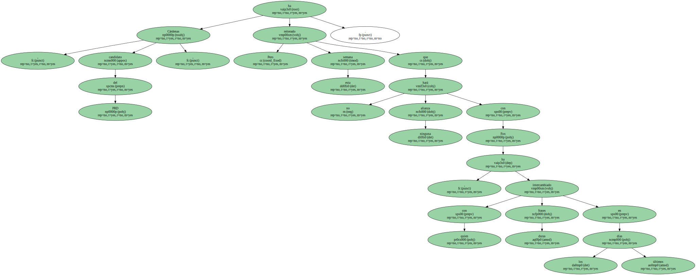El mismo Fox dijo el pasado lunes que ya no insistirá en pedirle a Cárdenas que conformen una fuerza opositora para expulsar al PRI del poder , y acusó al líder del PRD de tener nexos con Labastida.
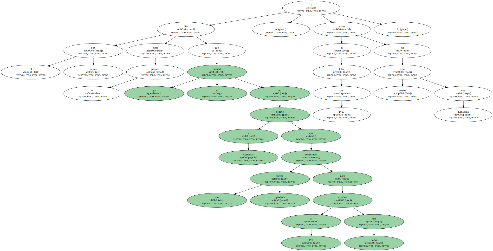El 25 de abril pasado , los seis candidatos a la presidencia participaron en un debate televisivo a nivel nacional que , según las encuestas de opinión , fue ganado por Fox.
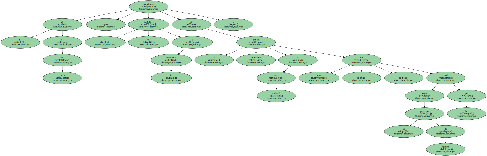Un segundo debate se celebró el pasado 26 de mayo pero únicamente con la participación de Labastida , Fox y Cárdenas.
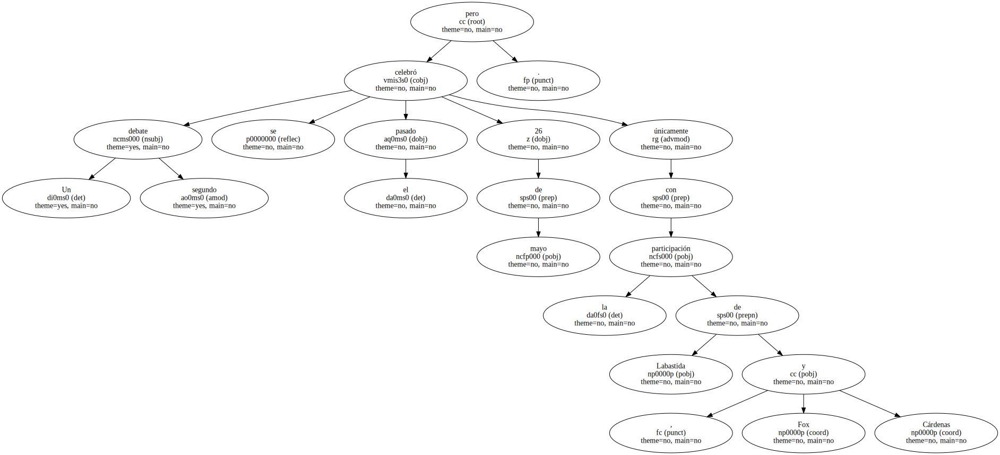Este también lo ganó Fox , según la mayoría de las encuestas difundidas por empresas consultoras profesionales , aunque algunos medios de prensa no ocultaron su afecto a los diferentes candidatos y los declararon ganadores por igual.
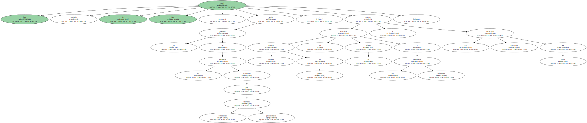A un mes de las elecciones , las dudas sobre quien las ganará no han sido despejadas , lo que en parte obedece a que algunos medios y los mismos partidos falsean los sondeos de opinión.
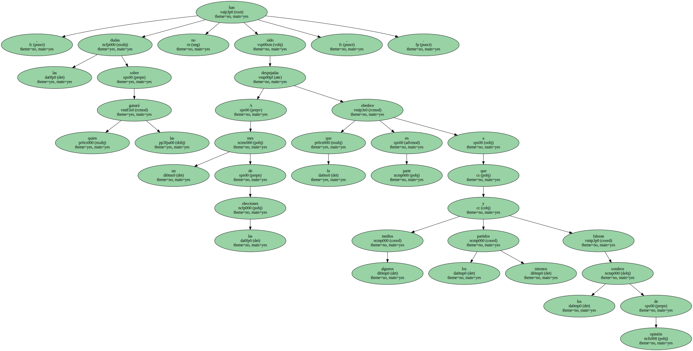Hace dos semanas , el escritor peruano Mario Vargas Llosa comentó en México que Vicente Fox representa la única alternativa de oposición para poner fin a 71 años del PRI en el poder.
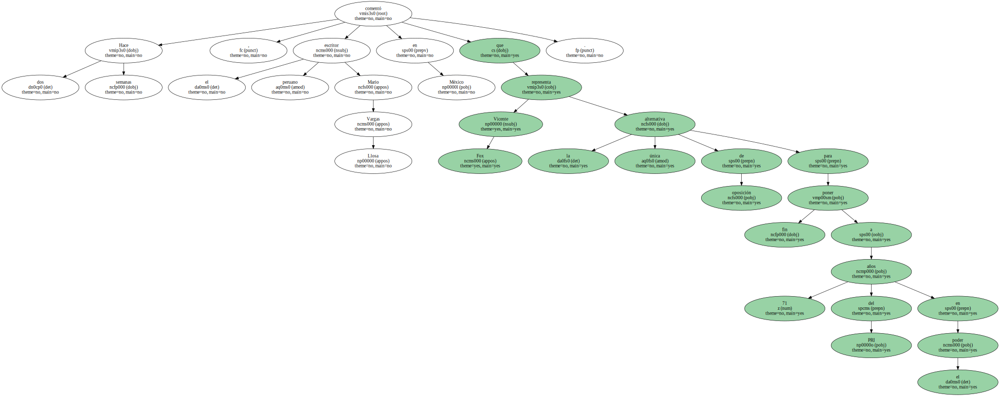Pero la opinión de Vargas Llosa fue considerada como una intromisión en los asuntos políticos internos de México por un sector radical del PRI , que incluso solicitó su expulsión del país , cuando el escritor ya había viajado a Costa Rica en su gira para presentar su más reciente libro , " La fiesta del chivo ".

El sucesor del actual presidente de méxico , Ernesto Zedillo , gobernará por un período de seis años , que comenzará contar a partir del 1 de diciembre próximo.
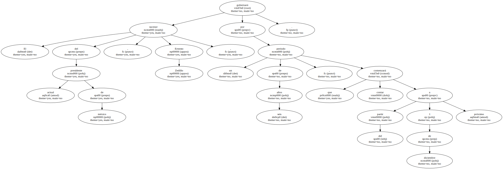El primer presidente de la Bulgaria postcomunista , Pétar Mladénov , falleció anoche a los 64 años , informó hoy , jueves , la Radio Nacional búlgara.
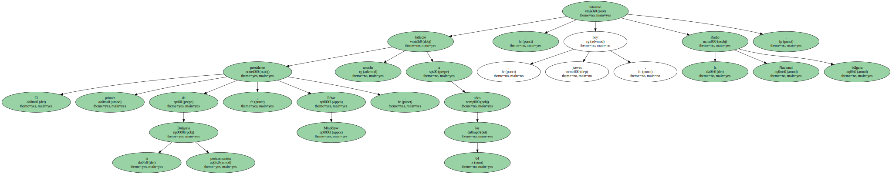Mladénov fue ministro de Asuntos Exteriores del Gobierno comunista de Bulgaria desde 1971 , y en 1989 encabezó el grupo de miembros del Partido Comunista que acabó derrocando a su líder , Todor Yívkov.
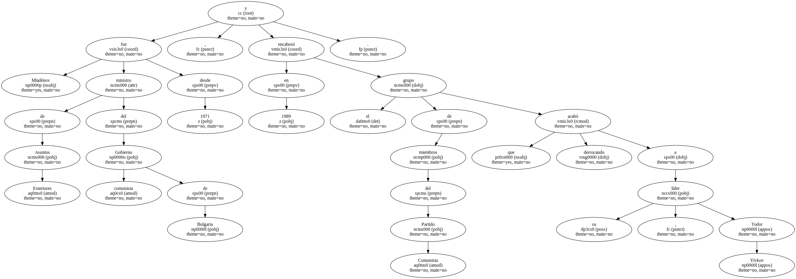Mladénov entró en el Gabinete del Gobierno comunista a la edad de 35 años y se esforzó en la apertura del país hacia el mundo.
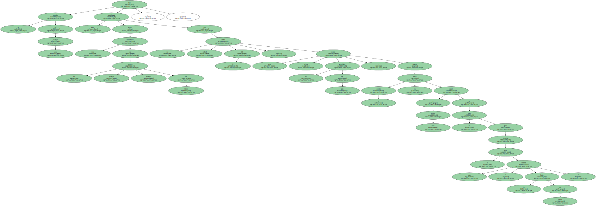